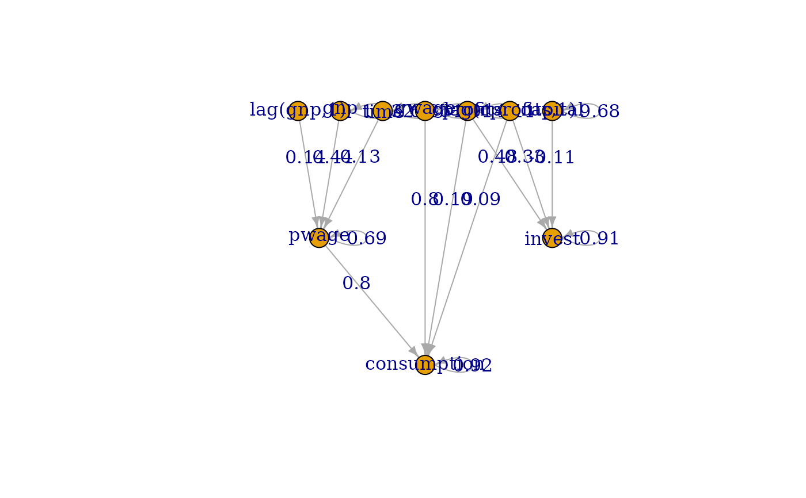

Fits a dynamic structural equation model
Usage
dsem(
sem,
tsdata,
family = rep("fixed", ncol(tsdata)),
estimate_delta0 = FALSE,
prior_negloglike = NULL,
control = dsem_control(),
covs = colnames(tsdata)
)Arguments
- sem
Specification for time-series structural equation model structure including lagged or simultaneous effects. See Details section in
make_dsem_ramfor more description- tsdata
time-series data, as outputted using
ts- family
Character-vector listing the distribution used for each column of
tsdata, where each element must befixedornormal.family="fixed"is default behavior and assumes that a given variable is measured exactly. Other options correspond to different specifications of measurement error.- estimate_delta0
Boolean indicating whether to estimate deviations from equilibrium in initial year as fixed effects, or alternatively to assume that dynamics start at some stochastic draw away from the stationary distribution
- prior_negloglike
A user-provided function that takes as input the vector of fixed effects out$obj$par returns the negative log-prior probability. For example
prior_negloglike = function(obj) -1 * dnorm( obj$par[1], mean=0, sd=0.1, log=TRUE)specifies a normal prior probability for the for the first fixed effect with mean of zero and logsd of 0.1. NOTE: this implementation does not work well withtmbstanand is highly experimental. If using priors, considering usingdsemRTMBinstead. The option indsemis mainly intended to validate its use indsemRTMB. Note that the user must load RTMB usinglibrary(RTMB)prior to running the model.- control
Output from
dsem_control, used to define user settings, and see documentation for that function for details.- covs
optional: a character vector of one or more elements, with each element giving a string of variable names, separated by commas. Variances and covariances among all variables in each such string are added to the model. Warning: covs="x1, x2" and covs=c("x1", "x2") are not equivalent: covs="x1, x2" specifies the variance of x1, the variance of x2, and their covariance, while covs=c("x1", "x2") specifies the variance of x1 and the variance of x2 but not their covariance. These same covariances can be added manually via argument `sem`, but using argument `covs` might save time for models with many variables.
Value
An object (list) of class `dsem`. Elements include:
- obj
TMB object from
MakeADFun- ram
RAM parsed by
make_dsem_ram- model
SEM structure parsed by
make_dsem_ramas intermediate description of model linkages- tmb_inputs
The list of inputs passed to
MakeADFun- opt
The output from
nlminb- sdrep
The output from
sdreport- interal
Objects useful for package function, i.e., all arguments passed during the call
- run_time
Total time to run model
Details
A DSEM involves (at a minimum):
- Time series
a matrix \(\mathbf X\) where column \(\mathbf x_c\) for variable c is a time-series;
- Path diagram
a user-supplied specification for the path coefficients, which define the precision (inverse covariance) \(\mathbf Q\) for a matrix of state-variables and see
make_dsem_ramfor more details on the math involved.
The model also estimates the time-series mean \( \mathbf{\mu}_c \) for each variable. The mean and precision matrix therefore define a Gaussian Markov random field for \(\mathbf X\):
$$ \mathrm{vec}(\mathbf X) \sim \mathrm{MVN}( \mathrm{vec}(\mathbf{I_T} \otimes \mathbf{\mu}), \mathbf{Q}^{-1}) $$
Users can the specify
a distribution for measurement errors (or assume that variables are measured without error) using
argument family. This defines the link-function \(g_c(.)\) and distribution \(f_c(.)\)
for each time-series \(c\):
$$ y_{t,c} \sim f_c( g_c^{-1}( x_{t,c} ), \theta_c )$$
dsem then estimates all specified coefficients, time-series means \(\mu_c\), and distribution
measurement errors \(\theta_c\) via maximizing a log-marginal likelihood, while
also estimating state-variables \(x_{t,c}\).
summary.dsem then assembles estimates and standard errors in an easy-to-read format.
Standard errors for fixed effects (path coefficients, exogenoux variance parameters, and measurement error parameters)
are estimated from the matrix of second derivatives of the log-marginal likelihod,
and standard errors for random effects (i.e., missing or state-space variables) are estimated
from a generalization of this method (see sdreport for details).
References
**Introducing the package, its features, and comparison with other software (to cite when using dsem):**
Thorson, J. T., Andrews, A., Essington, T., Large, S. (2024). Dynamic structural equation models synthesize ecosystem dynamics constrained by ecological mechanisms. Methods in Ecology and Evolution. doi:10.1111/2041-210X.14289
Examples
# Define model
sem = "
# Link, lag, param_name
cprofits -> consumption, 0, a1
cprofits -> consumption, 1, a2
pwage -> consumption, 0, a3
gwage -> consumption, 0, a3
cprofits -> invest, 0, b1
cprofits -> invest, 1, b2
capital -> invest, 0, b3
gnp -> pwage, 0, c2
gnp -> pwage, 1, c3
time -> pwage, 0, c1
"
# Load data
data(KleinI, package="AER")
TS = ts(data.frame(KleinI, "time"=time(KleinI) - 1931))
tsdata = TS[,c("time","gnp","pwage","cprofits",'consumption',
"gwage","invest","capital")]
# Fit model
fit = dsem( sem=sem,
tsdata = tsdata,
estimate_delta0 = TRUE,
control = dsem_control(quiet=TRUE) )
summary( fit )
#> path lag name start parameter first
#> 1 cprofits -> consumption 0 a1 <NA> 1 cprofits
#> 2 cprofits -> consumption 1 a2 <NA> 2 cprofits
#> 3 pwage -> consumption 0 a3 <NA> 3 pwage
#> 4 gwage -> consumption 0 a3 <NA> 3 gwage
#> 5 cprofits -> invest 0 b1 <NA> 4 cprofits
#> 6 cprofits -> invest 1 b2 <NA> 5 cprofits
#> 7 capital -> invest 0 b3 <NA> 6 capital
#> 8 gnp -> pwage 0 c2 <NA> 7 gnp
#> 9 gnp -> pwage 1 c3 <NA> 8 gnp
#> 10 time -> pwage 0 c1 <NA> 9 time
#> 11 time <-> time 0 V[time] <NA> 10 time
#> 12 gnp <-> gnp 0 V[gnp] <NA> 11 gnp
#> 13 pwage <-> pwage 0 V[pwage] <NA> 12 pwage
#> 14 cprofits <-> cprofits 0 V[cprofits] <NA> 13 cprofits
#> 15 consumption <-> consumption 0 V[consumption] <NA> 14 consumption
#> 16 gwage <-> gwage 0 V[gwage] <NA> 15 gwage
#> 17 invest <-> invest 0 V[invest] <NA> 16 invest
#> 18 capital <-> capital 0 V[capital] <NA> 17 capital
#> second direction Estimate Std_Error z_value p_value
#> 1 consumption 1 0.19323185 0.08199229 2.356708 1.843776e-02
#> 2 consumption 1 0.08942112 0.08136334 1.099035 2.717530e-01
#> 3 consumption 1 0.79625663 0.03594118 22.154439 9.452934e-109
#> 4 consumption 1 0.79625663 0.03594118 22.154439 9.452934e-109
#> 5 invest 1 0.48138141 0.08740019 5.507785 3.633777e-08
#> 6 invest 1 0.33084616 0.09069261 3.647995 2.642950e-04
#> 7 invest 1 -0.11150752 0.02408258 -4.630214 3.652875e-06
#> 8 pwage 1 0.44041577 0.02921824 15.073314 2.426312e-51
#> 9 pwage 1 0.14476511 0.03370693 4.294817 1.748376e-05
#> 10 pwage 1 0.13029837 0.02882711 4.519995 6.184119e-06
#> 11 time 2 6.05530071 0.93435313 6.480741 9.127318e-11
#> 12 gnp 2 10.32020497 1.58102475 6.527542 6.685791e-11
#> 13 pwage 2 0.69302930 0.10701058 6.476269 9.401826e-11
#> 14 cprofits 2 4.10929046 0.63141034 6.508114 7.610017e-11
#> 15 consumption 2 0.92285232 0.14239896 6.480752 9.126683e-11
#> 16 gwage 2 1.90952975 0.29464666 6.480745 9.127100e-11
#> 17 invest 2 0.91015034 0.14046563 6.479523 9.201284e-11
#> 18 capital 2 9.67950590 1.49358015 6.480741 9.127332e-11
plot( fit )
plot( fit, edge_label="value" )
